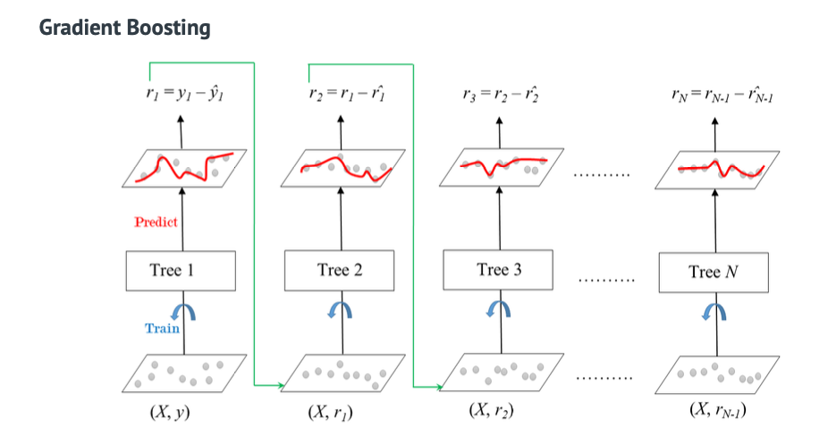
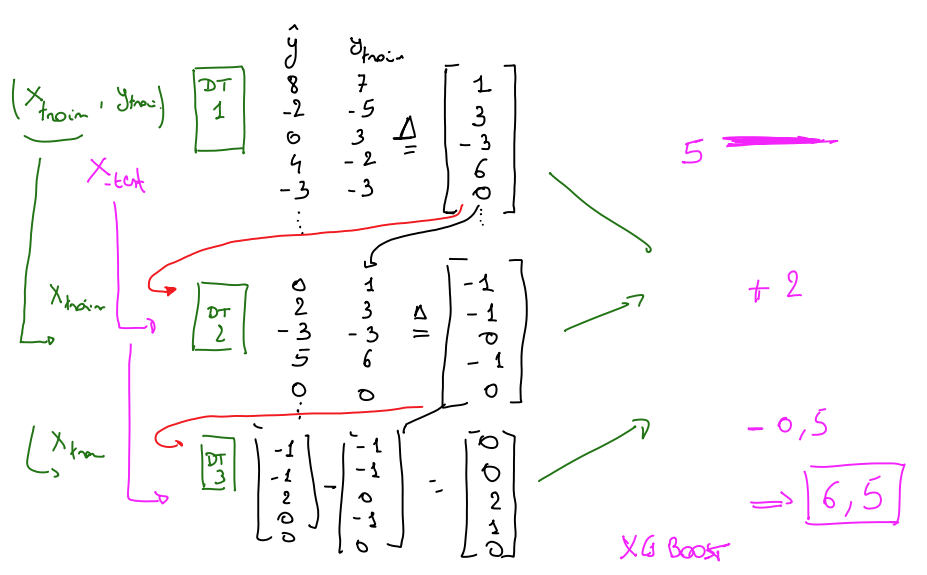
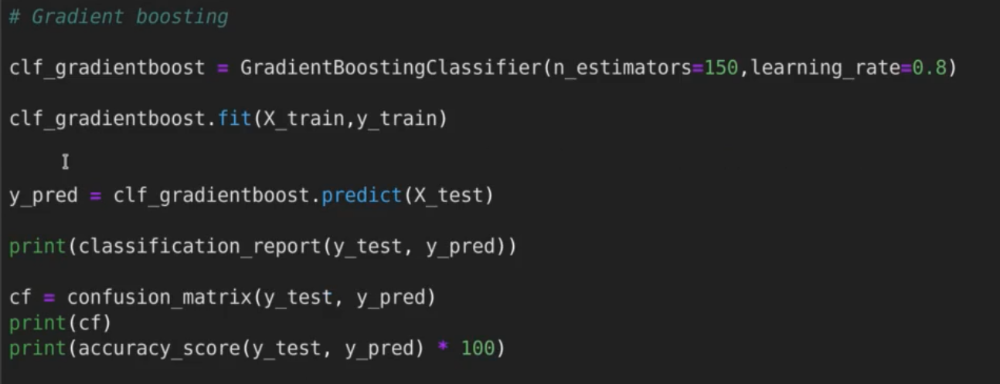

Gradient Boosting
Recall : Q Decision Tree Ensemble Methods

Gradient boosting is een ensemble learning method voor regressie en classificatie problemen. Het resultaat is een predictie model in de vorm van een ensemble van zwakke predicitie modellen (meestal decision trees).
Het basisprincipe is dat het volgende model de tekortkoming van het vorig model zal compenseren. Geijkaardig aan AdaBoost (Adaptive Boosting) maar manier waarop de modellen getraind worden is verschillend :

het eerste decision tree model wordt getraind op 60% van de trainingset. Men doet alle voorspellingen voor de volledige trainingsset met dat model en maakt een vector met het verschil tss het voorspelde en de gelabelde waarde (= afwijkingen).
Het volgende model gaat nu obv dezelfde trainingsset als targetwaarde de afwijkingen van dit eerste model krijgen.
Ook de daaropvolgende modellen krijgen de afwijkingen van het model ervoor.
De uiteindelijke predicties van een testset gebeuren dan door het eerste model een predictie te laten doen, het resultaat daarvan af te geven aan het volgende model. Dat model een predictie te laten doen enzovoort.
Het eindresultaat is dan de som van alle predicties. (6.5 in het vb)
deze manier van trainen is nog geoptimaliseerd met als resultaat XGBoost
GradientBoostingClassifier()
learningrate = 0.8 : voting power van de volgende modellen wordt steeds kleiner. deze modellen wegen steeds minder sterk door in het eindresultaat. hierdoor kan je overfitting tegen gaan.
